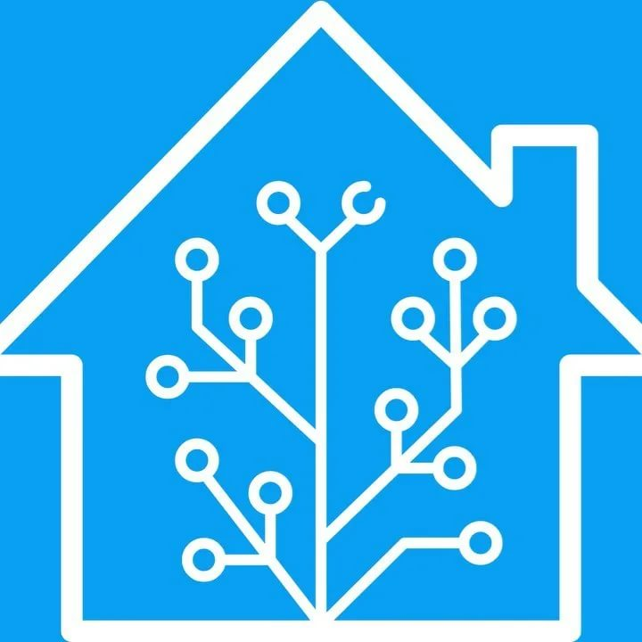

Мое хобби - умный дом!

Все началось с "умной" лампочки, которую я несколько лет назад купил в магазине. Она могла включаться с телефона, можно было настроить яркость и температуру света (сделать его "теплым" или "холодным").
Потом появилась управляемая розетка, а затем и желание сделать нечто большее, чем просто управление этим добром с телефона. Появился шлюз, к которому можно подключить датчики движения и управлять светом.
Пришло понимание что простых автоматизаций уже недостаточно, поэтому появился одноплатник raspberry pi4 и программа Home Assistant, в которой я освоил язык yaml. С использованием программных таймеров, модифицированных ДД, умных выключателей и ламп придумал и сделал полноценную систему управления освещением, которая случайно не отключит свет, когда вы в ванной и перестали двигаться зачитавшись инстами и телеграммами.
Температуру в комнатах поддерживаю с точностью до десятых градуса и зимой и летом. Пылик мчится в нужную зону по первому желанию. Шторы открываются когда пора вставать и закрываются с закатом, когда становится темно. Вытяжка сама включит свет когда начнешь готовить, и многое многое другое.
Что дальше? Вот изучаю курс Fullstack разработчик на Python, так как решил в дальнейшем связать свою работу с разработкой систем умного дома..